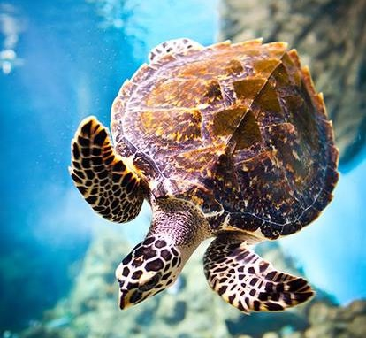

Irbis śnieżny
Dowiedz się więcej

Żółw szylkretowy
Dowiedz się więcejOrangutan sumatrzański
Dowiedz się więcej
Mimo, iż nie możemy twarzą w twarz się z nimi spotkać i zaoferować pomoc, to każdy z nas może dorzucić swoją cegiełkę aby zwiększyć szanse na zachowanie zagrożonych wymarciem zwierząt. Takimi cegiełkami może być np. utrzymywanie czystości w lasach oraz na górskich szlakach, a także nie wypalenie łąk i traw.
Większości osób pomaganie planecie kojarzy się z wydawaniem pieniędzy, ale wcale nie musi być to kosztowne, już samym podejściem do środowiska możemy wiele zdziałać, na przykład rezygnując z zakupów naturalnych futer oraz zwierząt z przemytu, gdyż często nie zdajemy sobie sprawy, że kupowany żółw, wąż czy ptak może pochodzić z nielegalnego handlu.
Piękna torebka wykonana z krokodylej skóry, futro z rysia, dywaniki z niedźwiedzia – wszystkie te wyroby systematycznie zmniejszają populację niektórych zwierząt. Chcąc więc ratować zagrożone gatunki, warto rezygnować z takich zakupów.
Inne zagrożenia dla naszej planety to m.in. kwaśne deszcze, czyli opady atmosferyczne o odczynie pH mniejszym niż 5,6, czyli kwaśnym. Zawierają kwasy wytworzone w reakcji wody z pochłoniętymi z powietrza gazami, takimi jak: dwutlenek siarki, trójtlenek siarki, tlenki azotu, siarkowodór, dwutlenek węgla, chlorowodór. Przyczyna ich występowania to m.in. zanieczyszczenie powietrza wskutek emisji pochodzącej z działalności człowieka. W wyniku tego niszczą one rośliny oraz zabijają zwierzęta, gleby i budowle również ulegają zniszczeniom.
Dziura ozonowa to zjawisko, które polega na redukcji ilości ozonu w stratosferze (a dokładniej w ozonosferze). Jest to bardzo niebezpieczny proces, ponieważ warstwa ozonu pochłania znaczną część promieni, które docierają do Ziemi ze Słońca. Głównym zadaniem ozonu stratosferycznego jest pochłanianie promieni UV, które potrafią być bardzo szkodliwe dla organizmów żywych. Mogą prowadzić do oparzeń skóry i uszkodzeń komórek, trwale zmieniać materiał genetyczny oraz powodować choroby nowotworowe, w tym czerniaka.
Składowisko odpadów – zlokalizowany i urządzony zgodnie z przepisami obiekt zorganizowanego deponowania odpadów. Pojęcie składowisko obejmuje również wylewisko odpadów ciekłych, wysypisko odpadów komunalnych, a także zwałowiska mas ziemnych. Składowanie odpadów może odbywać się wyłącznie w miejscu do tego wyznaczonym.
Aby pomóc w najmniejszym stopniu powinniśmy ograniczyć szerzący się na świecie konsumpcjonizm i odpuścić sobie kupowanie niepotrzebnych nam rzeczy. Jeżeli chcesz zmniejszyć odpadki to najlepszą opcją będzie kompostowanie, pozwala to zmniejszyć o 30-50% ilość odpadów wywożonych na wysypiska. W przydomowym kompostowniku można przetworzyć nawet 300 kg odpadów w ciągu roku.